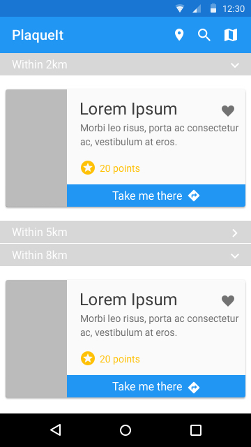
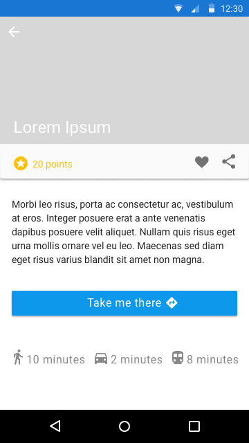
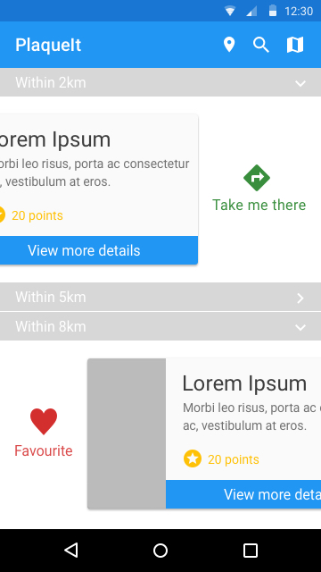

Android development is different to anything I've done before; I'm experienced with front-end web development, which is relatively open to different implementations and methods of doing things. In contrast, Android has some set ways of achieving a specific aim, most of which are detailed on the Android Developer website. I enjoyed learning more about Java and Android Studio, and getting more experience with Object-Oriented Progamming.
Android is written in Java, which is owned by Oracle (historically Sun Microsystems). Large parts are open-source (where the source code is a open and accessible to anyone to edit and change for any purpose) . However, some are closed-source and only accessible to Oracle, who have been involved in long-running legal battles with Google over their use of private Java code .
To develop an Android app, an IDE (integrated development environment) called Android Studio, developed by Google and based on JetBrains' IntelliJ, is used. Previously, Eclipse ADT (Android Developmen Tools) was used.
Along with Java, Android also uses XML (eXtensible Markup Language) to build the layouts of each interface for the activities, fragments, etc. This can then interact with the Java using Object Types (e.g a TextView) to change the various values, create an event handler for a button being tapped, and many more.
I have learnt a lot about Object-Oriented Programming, which Android and Java are both very focussed on. Android has many built-in classes developed by Google which are then available to implement and extend to achieve your aims. For example, an Activity (anything which provides the user with a screen where they do something specific ) usually extends an Adnroid class known as AppCombatActivity. Another example is my View Pager Adapter, which is on the Dashboard and switches the view between the List and the Map. To create this, I have extended a class called FragmentPagerAdapter and then specified the fragments to be shown on each tab inside a switch statement.
I have two databases for my app; one is an SQLLite database which is built into the app, and one is a MySQL database hosted on the server.
The SQLLite database is built into Android and allows for offline access; it holds all my Plaque data, which is currently about 2600 data rows. SQLLite is very small implementation of an SQL database which is made for storing locally. I chose this because I wanted the plaques to be available when the user had no internet connection; this is likely, as they ae likely to be away from a good connection when using the app, due to the nature of it.
The data for the Plaques came from a website called OpenPlaques; they provided two JSON files for all the plaques in the UK (about 10,000). The first one listed all the meta data such as subject, inscription, area, address, thumbnail, etc. The second JSON file was a GeoJSON file, which listed all the geo-data for the plaques, and linked it to the first file using a unique ID tag for each plaque. I wrote a small PHP script to combine the two JSON files and deposit it into a MySQL database, which I then converted to an SQLLite database. In the PHP script, I also had a constraint that it should only get Plaques in London (the JSON file had an area property); I decided that 2600 plaques were enough and I wouldn't be able to test the app in places other than London without incovenience.
Currently the app is showing 20 plaques on the main list by simply getting the first 20 in the database (IDs 1 to 20), however I plan to shortly change this to get them by location and show them in descending order of closeness.
To show the Plaques, I have used an Android list entity called Recycler View, which is a list view which only stores in memory the cards which are on the screen; this saves memory which means it is more effecient. It is seen when scrolling down the list and the images load only when the user scrolls down to show that card.
My server database holds the User data and the data from the visits and the plaques which the user favourites. In the future, it will also hold the data on plaque collections (plaques which are related to each other (e.g British Prime Ministers)). My user table holds everything related to the user; the email, name, date registered, and crucially, the primary key, which is a unique ID automatically generated by MySQL when a new record is generated. In the favourites table, there are four records - a unique ID (not used anywhere else but has to be there as a primary key) and then the ID of the user who favourited it and the Plaque ID they have favourited, and also the time they favourited the plaque, so the favourites can be shown in descending order (most recent at the top). The user ID is a foreign key to the user table, and the plaque ID would be but because the plaque database is local to Android, it cannot be.
The server-side code uses Java Servlets as the underlying framework; these are in fact an older technology that aren't used as much these days - the more modern way of doing this would be a Rest API. I used query parameters on the URL so that I could specify data to get and post to the server; because the request is a GET request, it shows the parameters in the URL string - if it was a POST request it would hide them and send them in the header instead.
To write the Java Servlet code, we used Vi, the default Unix text editor, which is a command-based editor with no mouse input. I use Vim (vi-improved) as my default editor on my Mac, so I'm fairly used to the various keyboard commands, but some were different which was interesting. (I wrote a help sheet to give my confused coursemates some pointers on how to use the technologies available to us.) I decided early on that editing on the server was slow and pointless (with Vim I have syntax highlighting, and various other plugins to increase my productivity) so I installed Git on the server and pushed my work to a Git repo and then pushed and pulled my work to get it on the server. Unfortunatley I couldn't figure out how to replicate the Jetty-Ant-Servlet setup on the server so i couldn't test my code locally so had to keep pushing to the server, hence the high number of commits and bug fixing commits I've made to the repo. (Testing live on a server is a bad idea because if your code has any vulnerabilities, it may crash the server or a hacker may be able to gain access to the data or server.)
To connect to the server, I used Square's library called OkHttp, which makes it very easy to do asynchronous requests to a server. Android won't allow synchronous requests on the main UI thread because if it fails to return it will freeze and crash the app, which is obviously bad for users. Instead, Android encourages Asynchronous requests, which means that the method containing the request returns before the data from the request is returned.
I have added two links below to images which will show in a jQuery Mobile popup, which demonstrate the code I have used to connect to the server using OkHttp.
Building the requestThe values for these requests are held in a Java data type known as Futures, which are variables which are "promised" some return data in the future but won't hold any until the request has returned, and are then converted to the primitve data type. (In JavaScript, Futures are known as Promises.) A URL with the various parameters is built and then submitted to the OkHttp methods, which then makes the request and returns the data, which is is a JSON format, which is parsed in Android Studio using Google's Gson library.
I'm actually struggling to think of a way to improve this, although I'm sure there are many. I didn't keep a particuarly good focus on the memory usage of the app - it could be quite high and may be something I'll have to look at in the future. Also, I am planning to rent a new server (maybe on AWS or Digital Ocean and competely redevelop the backend so that it uses a far more effecient and secure REST API to transfer the data. I plan to do this in JavaScript (using Node.js) as this is pretty standard now and I have experience using this. I also plan to create an iOS app for PlaqueIt at some point because I think it'd be a good introduction to the iOS environment. I would love to keep developing the Android app further and release it on the Google Play Store. Having been to Made in Brunel (and won the Software Engineering prize!) I am excited by this prospect as many people told me that I should do this.
I also think I could have developed a little faster, to get more features done; I was a little slow at the beginning as I was still reading about Android frameworks from Google and the best way to go about things, and made quite a lot of mistakes at first, which wasted time (but that's the best way to learn programming!).
I also need to add a catch error for when there is no internet available (or, when the Brunel server is not available!) because currently, the app simply crashes when it cannot connect, which, considering I chose to have the plaques available offline, is not ideal. It will probably just show an error message on the app and disable any features which require network access but hopefully still show the plaques.
I am planning to add search soon; I will implement this by initially just searching the Subject for the string the user inputs, but I will expand it to location searching as well. Initially my design for bringing up the search box and other related functions (a navigation bar, to change page to Profile, settings, etc) and location search as well) was going to using a dropdown (click on an icon on the app bar and the dropdown would slide down), however I decided this was too complicated and not very "Google-like" in terms of design.
UML diagrams and the like are not my strength; I much prefer developing the app in question rather than doing the various theoretical design diagrams before. However, I did produce a Use Case diagram, as can be seen in Figure 1. This shows the (at the time I created it, for Task 1) the three main functions of the app - show a list of plaques, which is extended by multiple features (nearby plaques, visited history, favourites). This is the Recycler View I talked about above - I can re-use this same Recycler and List fragment whenever I want to show a list of my plaques, then plug in a list of plaque objects and it shows them where-ever it's placed. The Use Case diagram also shows that these lists also 'use' the Plaque card item/object - this means that it creates objects for these items . It also shows the Get Directions to Plaque, which hasn't been added into the app yet; it will however use the plaque data to get the latitude and longitude data and then get directions from your current location. The third one is the routes, or collections, of plaques. Since making this UML diagram, I have changed my view on routes a little - I think giving users a specific route to go through is too specific; simply a collection of plaques which they can visit, and when they complete them all, they get bonus points and a "trophy" or something for doing that collection. While routes would need to use the plaque directions module of the app, a collection wouldn't, as it would just be a list of plaques with the nearest to your current location at the top. I also plan to let users create and share their own collections as well.
The design of my app is based upon Google's design language called Material Design ; I chose this because it looks native to Android and is largely, a very good design language. It is also implemented heavily in Android and is therefore very easy to use within the IDE.
I have included some screenshots below of the initial concepts for my app; since then I have changed it quite a lot. The list below highlights my changes:
  These designs were created using an application on Mac OS X called Sketch, which is a professional design tool for interfaces and websites. I created some sketches, which are viewable in my Task 1 presentation, and computerised these because they looked quite awful when they were simply scanned in, and then went straight on to design. I didn't want to or feel the need to formalise the sketches any further into wireframes.
I chose to default to the list view on the main Dashboard because I decided that being shown a map when you first enter the app would be a bit confusing. I think it is far more useful to be shown a list of the nearby plaques, and can switch to a map for a different way of looking at that data.
The idea of using blue plaques as the subject of our app worked really well; there was enough data for them which made them easy to use and test with, and the app has a lot of different user groups who would be interested (for example, historical societies, scientific-historical societies, geographical interests). Also a lot of different people can be targeteted - students interested in history and London, tourists, and people who want to compete against their friends.
Team meetings evolved from discusing the app design, potential features and theoretical concepts like UML design to talking about pratical implementations of the back-end code, connecting to the server from Android Studio and hooking the Plaques and data up to the app. Team meetings were useful but at times it also felt like we went round in circles a little, which was annoying. I think the lab sheets and the instructions in them need to be far better structured and written better, from both a technical viewpoint and making them less ambihous, as a lot of things we discussed in our group meetings were the lab sheets and what a particular point or instruction meant.
Got to be honest; our group didn't really use the wiki and collaboration tools. We relied quite heavily on sharing things on Slack, Dropbox and WhatsApp. Slack is great for team chat as it has so many integrations with other tools such as Trello, Dropbox, etc and can now also do voice and video calls/messages. We were able to share files and discuss about the project and things easily, and get notifications from the team members.
I think our team were effecient - however due to the way we carried out the implementation of the app, we maybe didn't use our various skillsets as effectively as possible. We each did the Android Studio coding ourselves as we decided it would have been too difficult to each do different bits of the app when we varied so much in programming knowledge and skill. However we did help each other out and did some small presentations to our team if we had completed something which the others didn't understand. In a typical development team, Version Control (typically Git but could also be SVN, Mercurial, etc) would be used and a developer type would do their own part of the app (for example, a front-end developer would work on the consume facing part of the app while the back-end developer would focus on the server, integrations and databases). However, as the skills in the group (and probably most other groups too) was so wide, we couldn't really do that. Personally, for me, I am quite experienced in developing apps and websites so I just carried out the development myself and was quite far ahead of my team. Maybe in hindsight this was wrong but (no offence to my team members) I would have found it very difficult to share the development work because I had my own way of working and developing the app.